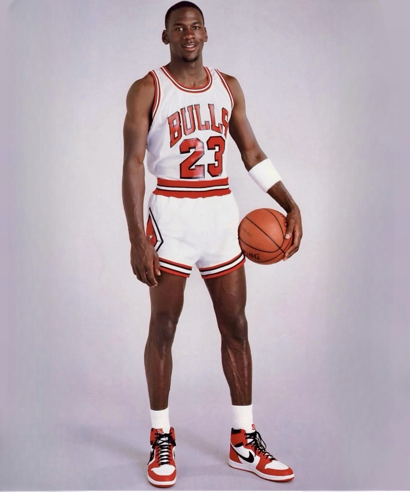
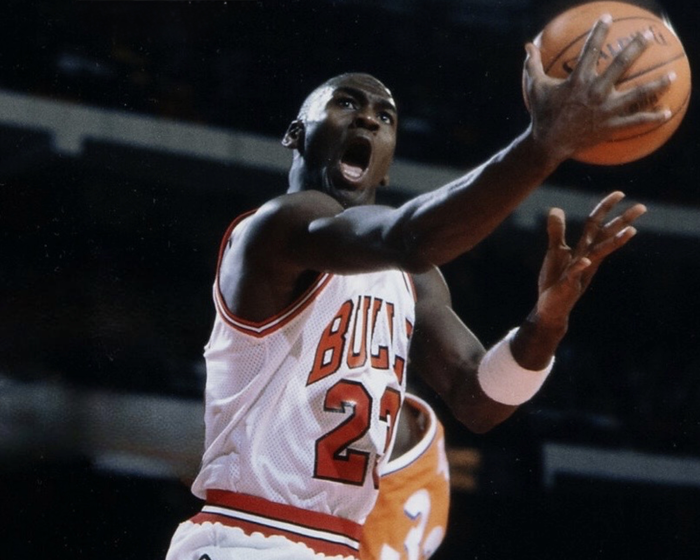
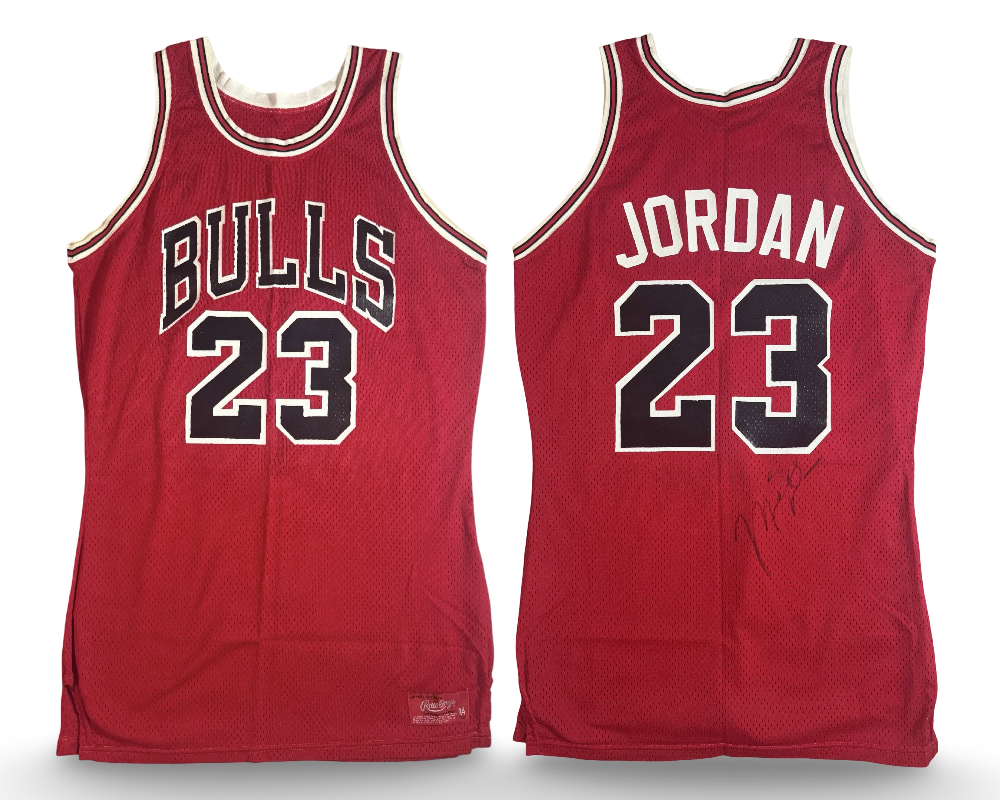
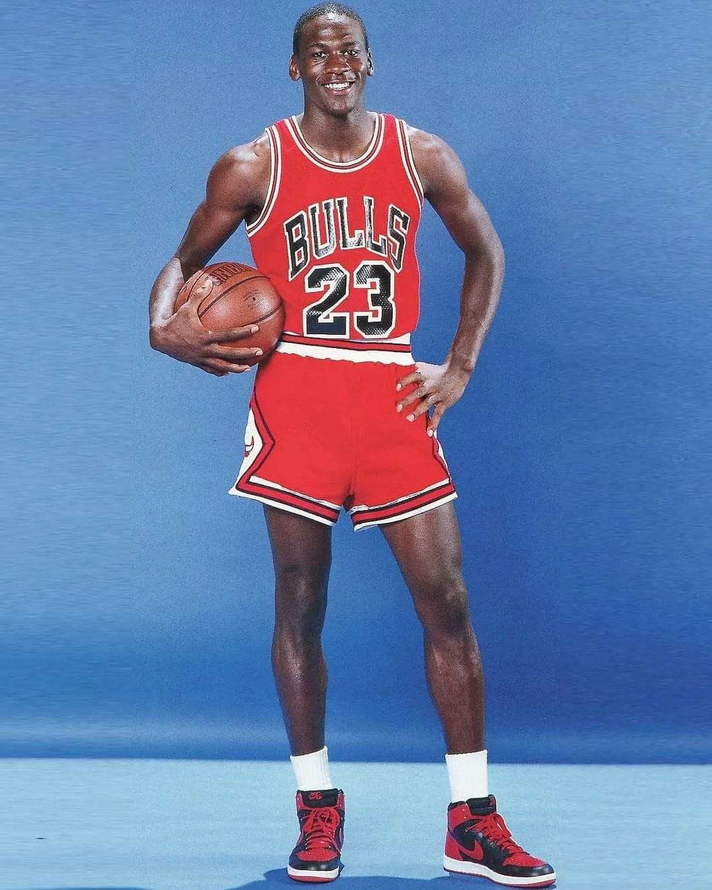

Promotional home garment documented through period imagery.
Research & Provenance
Promotional home example documented through contemporary imagery from the 1985–86 production period.
Documented jersey population for Michael Jordan’s 1985–86 Chicago Bulls season, including promotional, regular season, and postseason use.
Population reflects distinct season-worn garments or uniform sets confirmed through research, documentation, and comparative image analysis.
| Style | Known | Public | Status |
|---|---|---|---|
| Home | 2 | 0 | In Progress |
| Away | 2 | 1 | In Progress |


Promotional image of Michael Jordan — 1985–86.
Promotional home example documented through contemporary imagery from the 1985–86 production period.

In-season game imagery — 1985–86 home jersey.
This garment represents the primary regular season home jersey. A full-season visual verification analysis has been confirmed and completed.


Publicly documented promotional away example.

In-season game image of Michael Jordan — 1985–86.
This garment represents the primary regular season road jersey. A full-season visual verification analysis has been confirmed and completed.